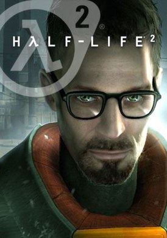
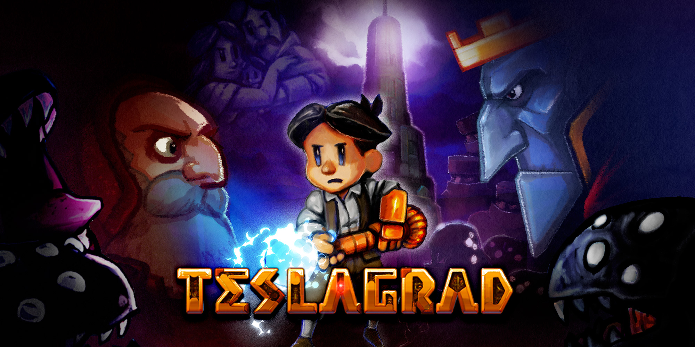
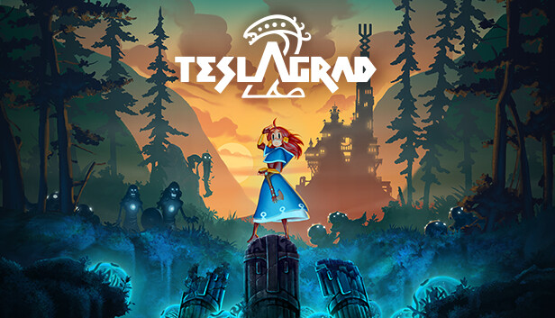
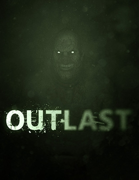

Топ четких игр на ПК
Red Dead Redemption 2 Открытый мир в стиле вестерна, где игроки исследуют американский Дикий Запад в роли Датча ван дер Линде и его банды. Игра включает в себя охоту, рыбалку, бои и множество побочных заданий. История рассказывает о борьбе за выживание, дружбе и предательстве, с невероятной проработкой мира и персонажей.
Marvel's Spider-Man Экшен-игра, в которой игроки берут на себя роль Питера Паркера, супергероя Человека-паука. В игре открытый мир, наполненный различными миссиями, головоломками и сражениями с врагами. Сюжет сосредоточен на борьбе Паркера с преступностью и мощными злодеями, такими как Доктор Осьминог и Мистерио.
osu!Музыкальная аркада, в которой игроки кликают по нотам, появляющимся на экране в такт музыке. Игра предлагает множество уровней сложности и позволяет создавать свои собственные карты, что привлекло большое сообщество игроков и создателей контента.
Half-Life 2 Шутер от первого лица, где игроки берут на себя роль Гордона Фримена, ученого, который сражается с инопланетными захватчиками и противниками в постапокалиптическом мире. Игра известна своим захватывающим сюжетом, инновационной физикой и созданием напряженной атмосферы.
Teslagrad Платформер, основанный на магнитных и электрических силах, где игроки решают головоломки с использованием различных механизмов. Главный герой отправляется в приключение в поисках правды о своем происхождении в мрачном мире, полном тайных технологий и магии.
Teslagrad 2 Прямое продолжение первой игры, где продолжена история главного героя, который исследует новые локации и сталкивается с еще более сложными головоломками. Игра сохраняет концепцию магнитных и электрических механизмов, но добавляет новые элементы, улучшая и разнообразя геймплей.
Outlast Хоррор-игра от первого лица, в которой игроки оказываются в психиатрической больнице, полной ужасных тайн и безумных обитателей. В игре нет оружия — игроки должны скрываться, избегать врагов и решать головоломки, чтобы выжить и раскрыть мрачные тайны учреждения.
Marvels Spider-Man
Дата выхода: 7 сентября 2018
osu!
Дата выхода: 16 сентября 2007 Half-Life 2
Дата выхода: 16 ноября 2004 г. Teslagrad
Дата выхода: 13 декабря 2013 Teslagrad 2
Дата выхода: 19 апреля 2023 Outlast
Дата выхода: 4 сентября 2013